Chrome扩展推荐
推荐些个人使用起来觉得不错的Chrome扩展。
用户体验增强：
HTML5 Outliner（目录链接）、OneTab（页面管理）、净网大师（广告拦截）、远方（动态主页）、The Great Suspender（中断网页节省内存）、Chromium Wheel Smooth Scroller（滑轮增强）、Chrome Mouse Gesture（鼠标手势）、Vimium（以快捷键操作网页）、chrono 下载管理器（下载增强）、一键管理（插件管理增强）、Stylish（页面样式改变）、Imagus（图片预览）、Search All（搜索增强）、
网站体验增强：
Octotree（github浏览repository增强）、Octo Mate（github下载增强）、Awesome Autocomplete for GitHub（增强github搜索）、Avatars for Github（github用户头像显示）、Isometric Contributions（以三维形式显示github贡献度）、Wikiwand（增强wiki体验）、
其他：
IE Tab（内核切换）、Proxy SwitchOmega（代理切换）、划词翻译（翻译）、Clear Cache（清空缓存）、漫神器（漫画阅读管理）、Allow Copy（复制增强）、Tampermonkey（脚本管理）、Markdown here（使页面表单支持markdown）、GistBox Clipper（采集网页内容到gist）、Diigo Web Collector（网页采集）、
用户体验增强
Chrono下载管理器
除了比起浏览器自身的下载器有更好的管理功能外，还有资源嗅探功能能够批量的下载视频、图片、文件。
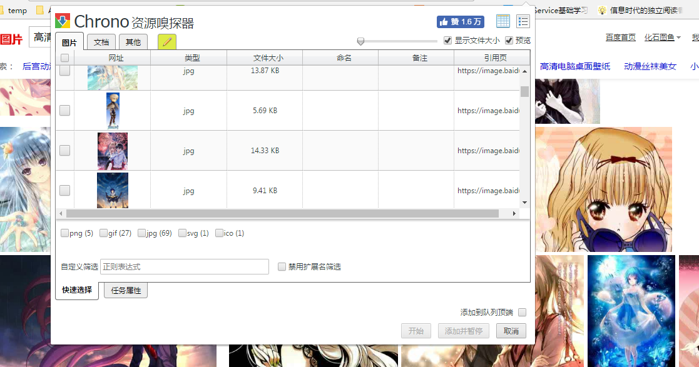
一键管理
方便的启用、禁用、删除扩展。能够禁用所有扩展，还原状态，对于应为插件而导致网页出故障时是个比较好的排查手段。
HTML5 Outliner
一个通过提取标题来生成目录的插件
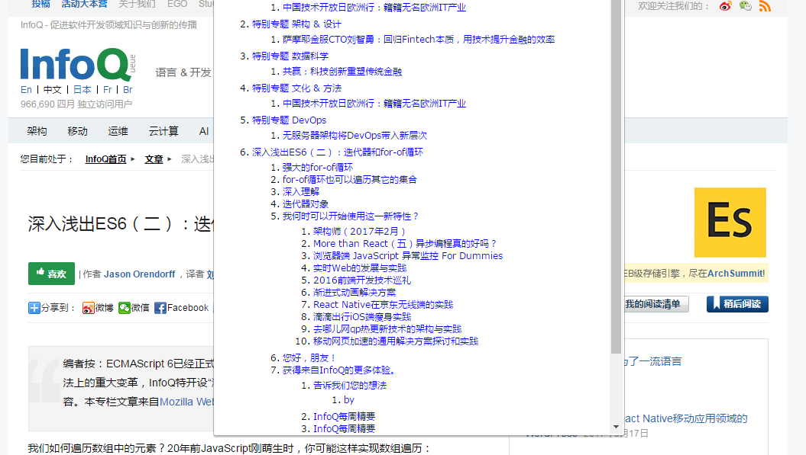
OneTab
当发现标签过多影响性能时，调用该扩展可以将标签全部清除放入一个临时列表中，从而能节省内存。被放入其中的标签可以一键恢复，也可一个一个恢复。
Stylish
可以给任意的网站换肤，皮肤可以通过再其官方网站中寻找、也可以在当前网站打开扩展查看与其相关的皮肤。
Stylish官网：
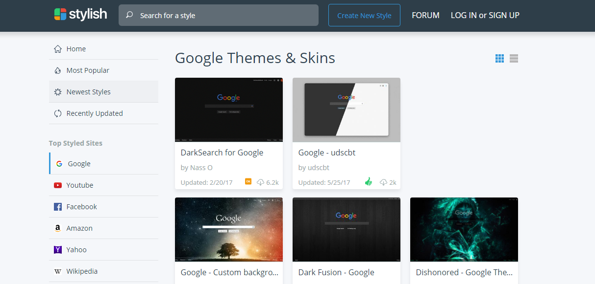
安装了样式后的百度：
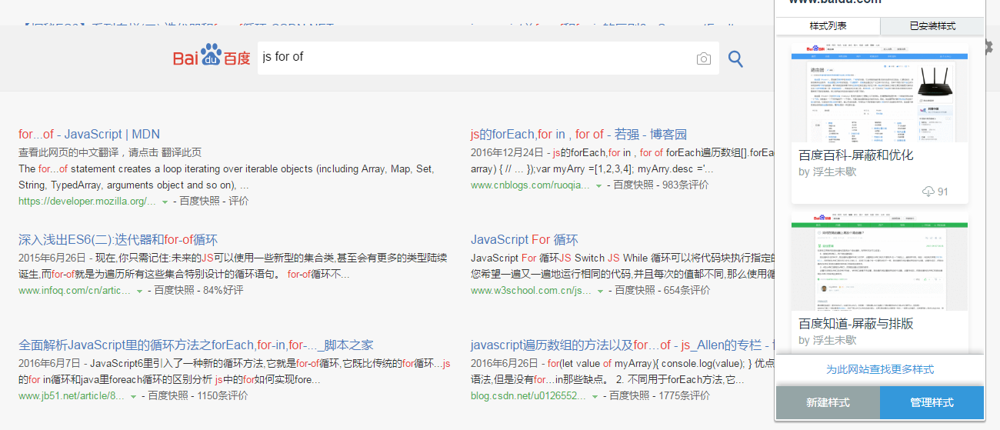
Imagus
鼠标指针悬停在链接或缩略图上时直接在当前页面的弹出视图上显示这些图片、HTML5 视频/音频和内容专辑。
Imagus效果：
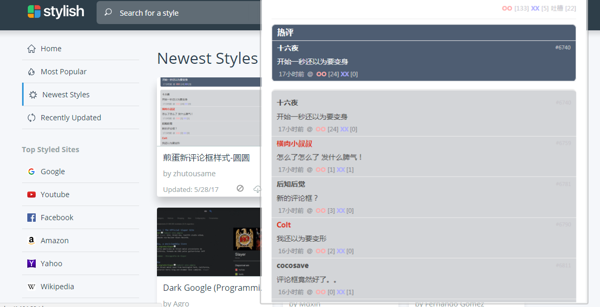
Search All
在搜索条上增加各种搜索引擎以便于切换，直接上图：
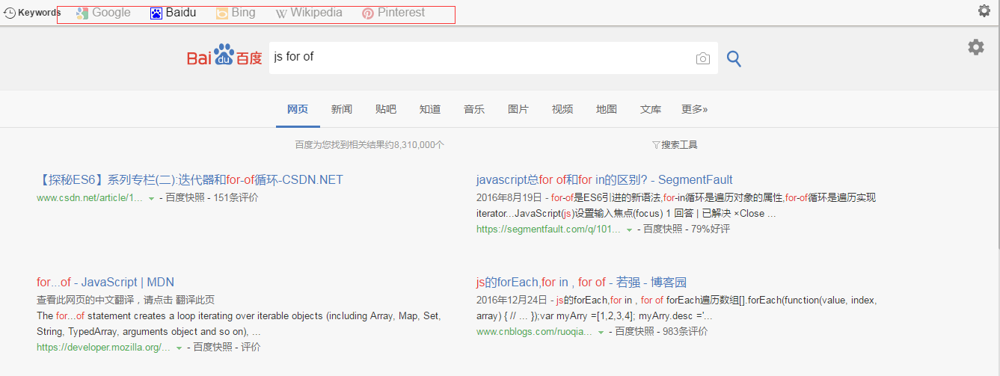
净网大师
不仅能够拦截各种小广告，还能去掉视频开头的广告，但也不是都有效。
远方 New Tab
一个主页扩展，功能是每次打开主页可以显示不一样的背景。上图：
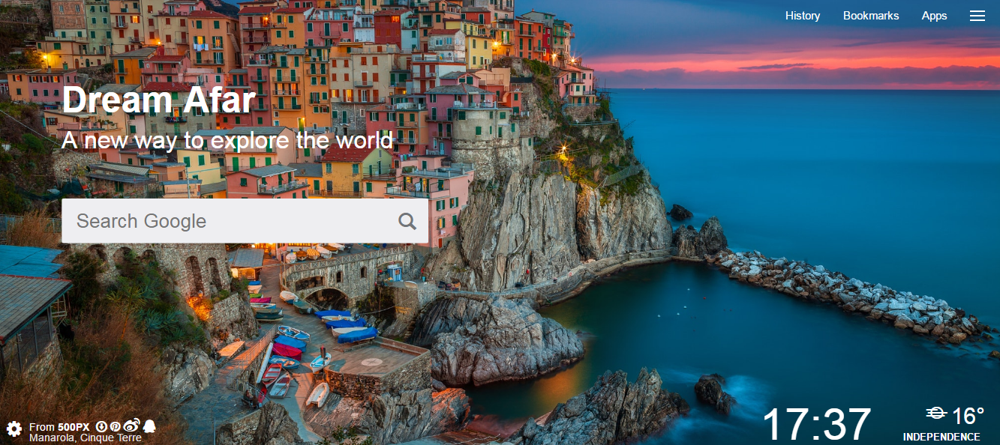
Chromium Wheel Smooth Scroller
使滚轮的滚动更加平滑不至于那么生硬，强烈推荐。
Chrome Mouse Gesture
使Chrome支持鼠标手势。在网页上，按住鼠标右键，拖动鼠标，划出对应的轨迹后，松开右键即可执行对应的动作。 如：按下右键，划出“下右”轨迹，松开右键 － 关闭当前标签
Vimium
使Chrome可以像操作Vim编辑器一样操作。简单说就是可以使用快捷键进行对应的操作。
常用的快捷键操作：
- f/F显示连接对应的快捷键(F对于链接是打开新的一页)
- G滚动到网页底部
- gg滚动到顶部
- u向上滚动一点
- d向下滚动一点
- /查找
- H回到上一页
- L进入下一页
- j下滚动
- k上滚动
- J切换到左标签
- K切换到右标签
按下F键后显示快捷键来操作界面上的链接或表单
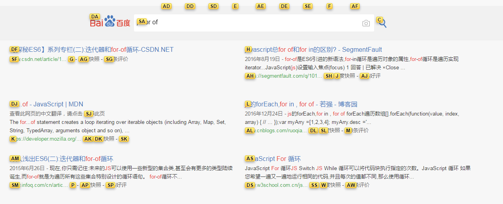
网站体验增强
Wikiwand
提供更好的wiki浏览体验，并提供了连接预览的功能。
Isometric Contributions
以一种同楼层的方式显示github的贡献度
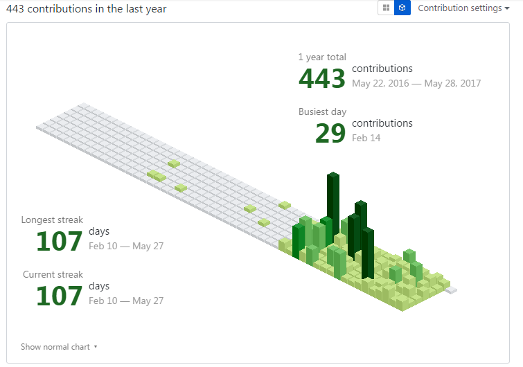
Octo Mate
提供了一系列github使用增强的功能，比如添加了进入到项目地址页的GH Pages按钮、能够显示下载的仓库大小、单文件下载。
Avatars for Github
显示github用户的头像
Octotree
以目录树的形式显示github库的文件和目录，并且可以直接下载目录树上显示的文件。如图所示：
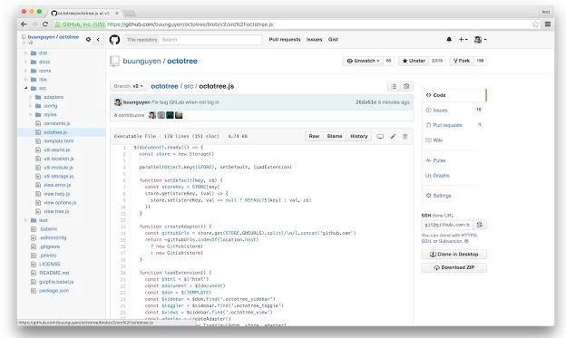
Awesome Autocomplete for GitHub
github搜索时提供提示条功能
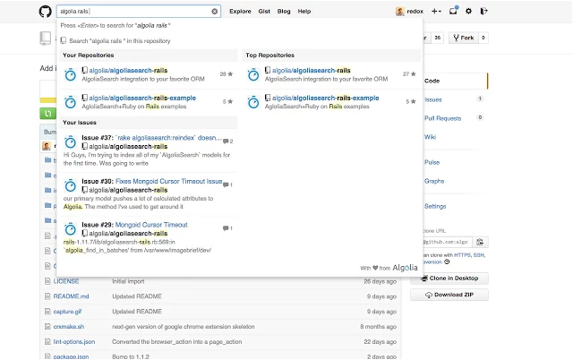
其他
IE Tab
IE Tab是在Chrome内部模拟IE引擎，以便使用IE的ActiveX控件。举个简单的例子网银只支持IE引擎的浏览器，使用了该插件就能使用网银了。
Proxy SwitchOmega
用于管理和切换多个代理设置，建议与XX-Net一同使用，能够方便达到科学上网的目的。
划词翻译
支持多种翻译引擎，包括百度、有道、google等，翻译后能自动朗读，能够设置快捷键。
Clear Cache
一键清空缓存，可以设置清除的数据的类型和时间。
漫神器
这是一个追漫画非常好的工具，漫神器不仅能够将不同完站的漫画放到书架中集中管理，漫画更新还有提醒。缺点是没法导出配置，用户重装系统后保存的漫画就消失了。
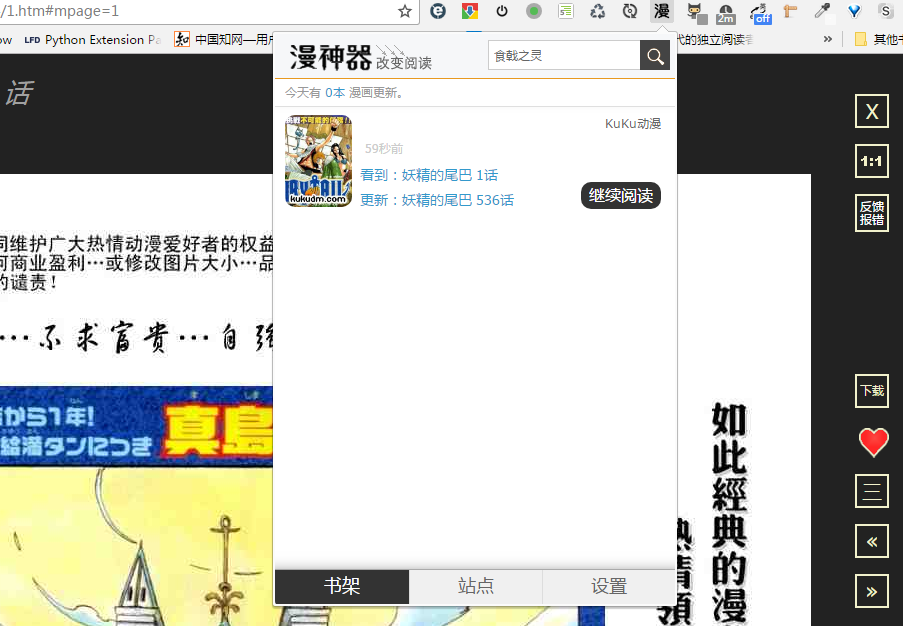
Allow Copy
用于解除一些网站的复制限制，或复制中跟着的版权信息。
Tampermonkey
扩展，具有弹出页面、可以有选项页面、还可以有后台页面，扩展还能使用chrome专有的API。脚本则是嵌入到网页中去执行的，它只是JS代码而已。如果是相同的功能，可以预见脚本将比扩展更加的轻量。
Tampermonkey是一个用于管理脚本的扩展，不同的浏览器都具有Tampermonkey的不同版本，这使得脚本能够扩浏览器。
点击Tampermonkey扩展打开其官方网站，点击文档、点击用户脚本源即可找到下载脚本的网站。
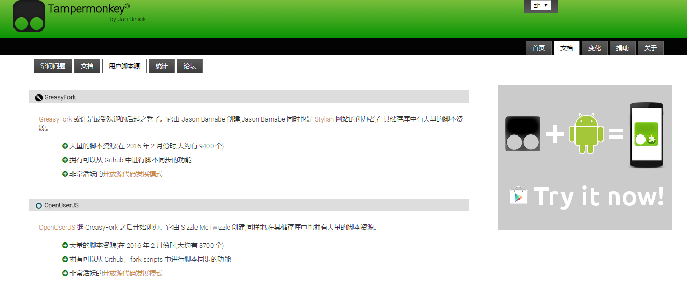
Markdown here
使页面表单支持markdown语法，前提是该处表单支持markdown语法
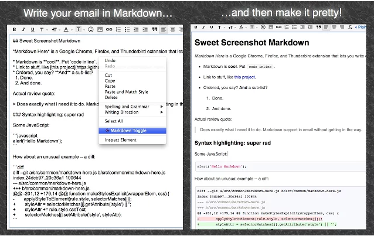
GistBox Clipper
gist是github网站提供的一个存放代码片段的仓库。GistBox Clipper能将页面上的内容采集到gist中，如下图所示：
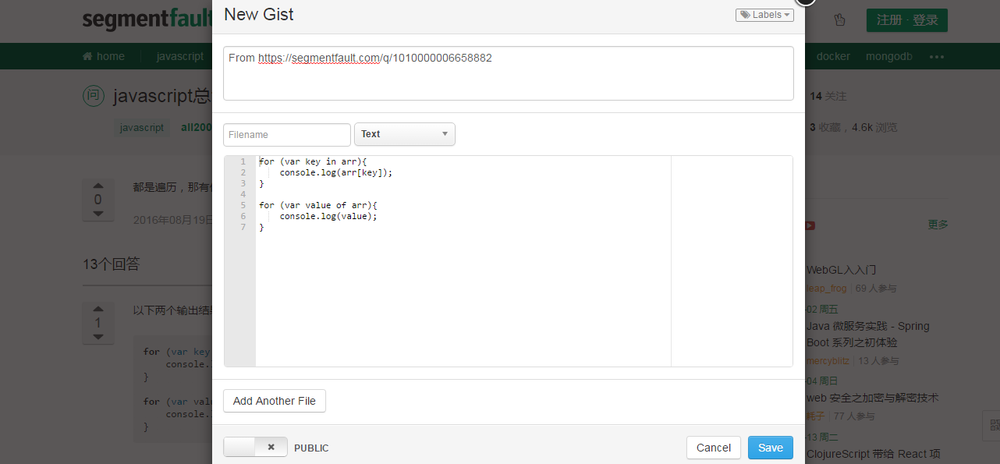
Diigo Web Collector
能够采集网页并给网页添加注释，高亮显示的功能。
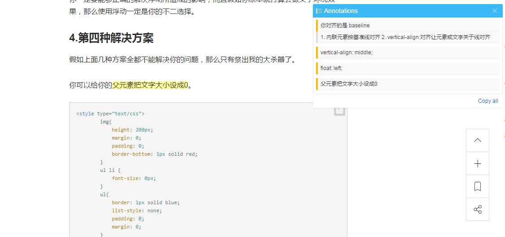
The Great Suspender
能使网页进入暂停状态从而减少内存的消耗，进入暂停状态的页面通过点击即可恢复。
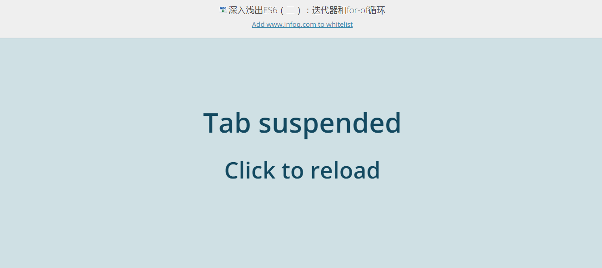